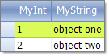

Binding to Array and ArrayList
The examples below demonstrate binding to a generic list, an arrays of custom objects, and an ArrayList of custom objects.
This collections have limitations when used as a datasource in which case a BindingList must be used.
Note: BindingList is the preferred collection since its changes are automatically reflected on the data-bound control.
Binding to a Generic List
The example below creates an ArrayList of generic objects initialized with five values and
assigned as a DataSource to the RadGridView.

[C#] Simple array class
public class ValueType<T>
{
T item;
public ValueType() { }
public ValueType(T item)
{
this.item = item;
}
public T ItemProperty
{
get { return this.item; }
set { this.item = value; }
}
}
[VB.NET] Simple array class
Public Class ValueType(Of T)
Private item As T
Public Sub New()
End Sub
Public Sub New(ByVal item As T)
Me.item = item
End Sub
Public Property ItemProperty() As T
Get
Return Me.item
End Get
Set(ByVal value As T)
Me.item = value
End Set
End Property
End Class
[C#] Binding to simple array
ArrayList list = new ArrayList();
for (int i = 0; i < 5; i++)
{
list.Add(new ValueType<string>("string " + (i + 1).ToString()));
}
this.radGridView1.DataSource = list;
[VB.NET] Binding to simple array
Dim list As New ArrayList()
Dim i As Integer = 0
While i < 5
list.Add(New ValueType(Of String)("string " + (i + 1).ToString()))
System.Math.Max(System.Threading.Interlocked.Increment(i), i - 1)
End While
Me.RadGridView1.DataSource = list
Binding to an Array of Objects
Arrays of objects containing
bindable types can be bound to
RadGridView by assigning the array to the __DataSource__property of the grid.
The example below defines a "MyObject" class containing one integer and one string property. The snippet of code at end of the example
creates an array of MyObject, initializes the array with two objects and assigns the array to the DataSource.
The MyObject class would typically be placed in its own separate class file and the array creation, initialization and assignment code might
be placed in a Form_Load event handler.

[C#] Simple object class
public class MyObject
{
public MyObject(int myInt, string myString)
{
_myInt = myInt;
_myString = myString;
}
private int _myInt;
public int MyInt
{
get { return _myInt; }
set { _myInt = value; }
}
private string _myString;
public string MyString
{
get { return _myString; }
set { _myString = value; }
}
}
[VB.NET] Simple object class
Public Class MyObject
Public Sub New(ByVal myInt As Integer, ByVal myString As String)
_myInt = myInt
_myString = myString
End Sub
Private _myInt As Integer
Public Property MyInt() As Integer
Get
Return _myInt
End Get
Set(ByVal value As Integer)
_myInt = value
End Set
End Property
Private _myString As String
Public Property MyString() As String
Get
Return _myString
End Get
Set(ByVal value As String)
_myString = value
End Set
End Property
End Class
[C#] Binding to object array
MyObject[] myArray = new MyObject[2] {new MyObject(1, "object one"), new MyObject(2, "object two") };
radGridView1.DataSource = myArray;
[VB.NET] Binding to object array
Dim myArray As MyObject() = New MyObject(1) {New MyObject(1, "object one"), New MyObject(2, "object two")}
RadGridView1.DataSource = myArray
Binding to ArrayList
The code below demonstrates how to use an ArrayList for RadGridView structure generation(note: the sample object is used from the previous example):
[C#] Binding to array list
ArrayList arrayList = new System.Collections.ArrayList();
arrayList.Add(new MyObject(1, "Object one") );
arrayList.Add(new MyObject(2, "Object two") );
arrayList.Add(new MyObject(3, "Object three") );
radGridView1.DataSource = arrayList;
[VB.NET] Binding to array list
Dim arrayList As New System.Collections.ArrayList()
arrayList.Add(New MyObject(1, "Object one"))
arrayList.Add(New MyObject(2, "Object two"))
arrayList.Add(New MyObject(3, "Object three"))
RadGridView1.DataSource = arrayList